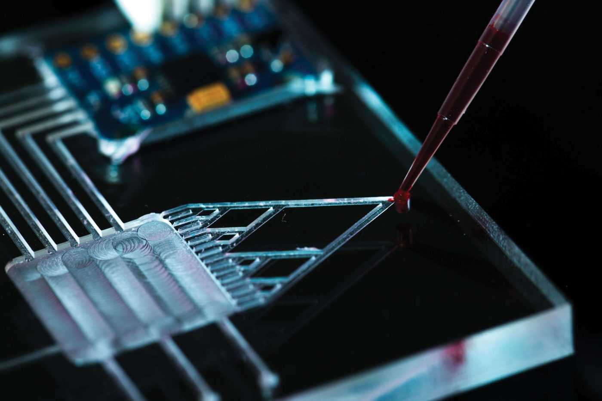

Voltammetry
Analyze redox behavior and electrode kinetics through potential scans.
Learn More

Microfluidic Tracking
Quantify droplet or flow dynamics in microchannel systems.
Learn More

Signal Denoising
Analyze ELISA and immunosensor data for concentration quantification.
Learn More

Animal Study
Analyze ELISA and immunosensor data for concentration quantification.
Learn More

Data Acquisition
Analyze ELISA and immunosensor data for concentration quantification.
Learn More

Immunoassay Data
Analyze ELISA and immunosensor data for concentration quantification.
Learn More